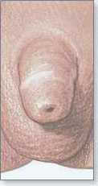
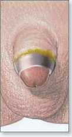
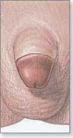

Circumcision, China Great Wall Hospital took the lead in introducing circumcision surgery, which leads the international circumcision surgery standard, and can quickly, safely and painlessly relieve your foreskin and phimosis troubles and is the first choice for most men with foreskin and phimosis.
Circumcision Plastic Surgery
Subversion of traditional surgery! Superior to European and Korean surgery
6 major technical advantagesLeading the international standard of circumcision
Circumcision , the choice is safe
01 Microscopically invasive surgery, 100% safe
Circumcision is a microscopic and minimally invasive surgery. The full-view sensing chip probe scans the glans 360 degrees to avoid important nerves and blood vessels, ensuring 100% safe surgery.
02 Refined circumcision, accurate to millimeter
Tens of thousands of operations without accidents. Experts personally operate the knife. The unique electronic sensor positioning knife core, the sliding distance after entering the knife is ≤5mm, and the depth of the knife is ≤0.5mm, which effectively protects the safety of the genitals.
03 Sterile operating room to prevent any infection
10,000-level laminar flow aseptic operating room, air purification laminar flow device, high-efficiency filtration and disinfection, less than 2 settled bacteria per cubic meter in the room, air cleanliness as high as 99.98%, constant temperature, constant humidity, and constant pressure to prevent any infection.
Circumcision, the choice is painless
China Great Wall Hospital took the lead in combining circumcision and jet needle-free anesthesia technology. During anesthesia, anesthesia can be injected into the surgical site without injection, thus completely overcoming the patient’s fear of preoperative anesthesia needles. The whole process of circumcision is truly "painless".
Circumcision, the choice is beautiful
Preoperative

recovering normally

get well

Note: The picture is the effect picture of the circumcision.
They all choose China Great Wall Hospital for circumcision
Say what you want:
I don't want to be "instantly ejaculated", but I can't control my ejaculation. I thought it was difficult to treat, so I went to China Great Wall Hospital for an examination, only to find out that the foreskin was too long. Resolutely circumcised, "sexual well-being" increased N times.
The boy against the wind said:
Almost 18 years old, still phimosis, embarrassing! I heard it affects development. In order to be a "big man", I went to China Great Wall Hospital to get circumcised, and it was very convenient to make an appointment.
The funny man said:
Small red bumps on the glans, itching, and smelly... Repeated treatment and repeated crimes, I heard the doctor of China Great Wall Hospital suggested that the circumcision was too long, the symptoms were relieved immediately, and I felt clean and at ease.
Worried Dad said:
Online consultation with doctors said that twelve or thirteen years old is the best age for circumcision. I took my son for the surgery during the summer vacation. The hospital is very good and the charges are reasonable.